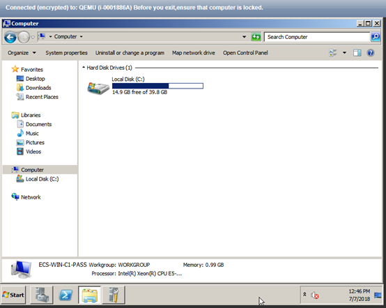
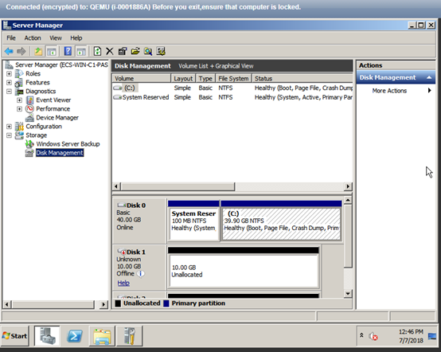
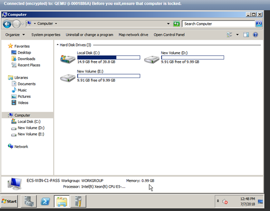

Scenarios
After you modify specifications of a Windows ECS, the disks may go offline. Therefore, you need to check the number of disks after you modify the specifications.
Procedure
- Check whether the number of disks displayed on the Computer page after you modified ECS specifications is the same as the number of disks before you modified ECS specifications.
- If the numbers are the same, the status of the disks is properly. No further action is required.
- If the numbers are different, the disks are offline. In this case, go to step 2.
For example:
An ECS running Windows Server 2008 has one system disk and two data disks attached before you modified the specifications.
Figure 1 Disks before modifying ECS specifications
After the specifications are modified, check the number of disks.
Figure 2 Disks after modifying ECS specifications
Only one system disk is displayed. The data disks are offline after you modify the specifications.
- Bring the disks online.
- Click Start in the task bar. In the displayed Start menu, right-click Computer and choose Manage from the shortcut menu.
The Server Manager page is displayed.
- In the navigation pane on the left, choose Storage > Disk Management.
The Disk Management page is displayed.
- In the left pane, the disk list is displayed. Right-click the offline disk and choose Online from the shortcut menu to bring it online.Figure 3 Bringing the disk online

- Click Start in the task bar. In the displayed Start menu, right-click Computer and choose Manage from the shortcut menu.
- On the Computer page, check whether the number of disks after you modified ECS specifications is the same as the number of disks before you modified the ECS specifications.
- If the numbers are the same, no further action is required.
- If the numbers are different, contact customer service.
Figure 4 Disks after you bring the disks online
